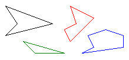
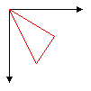

Многоугольники в GDI+
Многоугольник — замкнутой фигуры с тремя или более прямые стороны. Например треугольник — это многоугольник с трех сторон, прямоугольник — это многоугольник с четырех сторон и пятиугольник — это многоугольник с пятью сторонами. На следующем рисунке несколько многоугольников.

Рисование многоугольника
Чтобы нарисовать прямоугольник, вам потребуется Graphics объекта, Pen объекта, а также массив Point (или PointF) объектов. Graphics Предоставляет DrawPolygon метод. Pen Объект сохраняет атрибуты, например, ширина и цвет линии, используемый для визуализации многоугольника, а также массив Point объектов содержит все точки, чтобы быть соединенных прямых линий. Pen Объект и массив Point объекты передаются как аргументы для DrawPolygon метод. В следующем примере рисуется три стороны многоугольника. Обратите внимание, что только три точки в myPointArray: (0, 0), (50, 30) и (30, 60). DrawPolygon Метод автоматически закрывает многоугольника путем рисования линии из (30, 60) обратно к начальной точке (0, 0).
Point[] myPointArray =
{ new Point(0, 0), new Point(50, 30), new Point(30, 60) };
myGraphics.DrawPolygon(myPen, myPointArray);
Warning
It looks like the sample you are looking for does not exist.
На следующем рисунке многоугольника.
